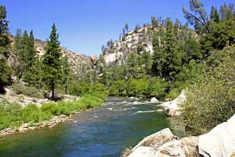
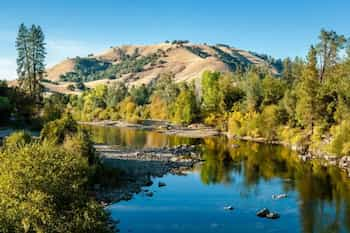
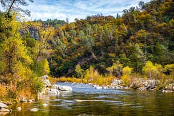

Contact us HERE to book your adventure today!

Kern River - Drift gently down calm waters surrounded by lush canyon walls and wildlife. Perfect for families and first-timers, this relaxing half-day trip offers stunning views and gentle currents with just a splash of excitement.
Saramento River - Tackle Class II-III rapids on this thrilling adventure through winding river bends and splash zones. Ideal for adventurous spirits who want a mix of adrenaline and scenery without going full extreme.
Selway River - Brace yourself for a heart-pounding ride through Class IV-V rapids, steep drops, and technical maneuvers. Designed for experienced paddlers, this full-day expedition demands teamwork, grit, and a love for wild water.
| Trip Name | Difficulty | Duration | Age Requirement | Price |
|---|---|---|---|---|
| Kern River | Easy | Half-Day | 5+ years | $65 |
| Sacramento River | Moderate | Full-Day | 12+ years | $120 |
| Selway River | Advanced | Full-Day | 16+ years | $180 |
*All customers must sign waiver beforeand